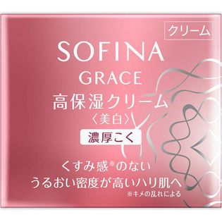

返回列表
产品名称：ソフィーナグレイス 高保湿クリーム美白 濃厚こく

花王 ソフィーナグレイス 高保湿クリーム美白 濃厚こく ４０Ｇ（医薬部外品）
メーカー 花王
JANコード 4901301325587
商品の特徴
夜のみ使用で約３ヶ月分
- 成分・分量
- カモミラET＊、酢酸DL-α-トコフェロール＊、水、グリセリン、流動イソパラフィン、ワセリン、BG、ジメチコン、ジイソステアリン酸ポリグリセリル、セタノール、ジカプリン酸ネオペンチルグリコール、ヘキサデシロキシPGヒドロキシエチルヘキサデカナミド、ステアリルアルコール、ステアリン酸POEソルビタン、アスナロ抽出液、イソステアリン酸コレステリル、チューベロースポリサッカライド液、水溶性ショウキョウエキス（K）、ユーカリエキス、カルボキシビニルポリマー、ステアロイルメチルタウリンNa、POEラウリルエーテルリン酸Na、キサンタンガム、ラウロイルグルタミン酸ジ（コレステリル・オクチルドデシル）、スクワラン、ステアリン酸ソルビタン、アルキル-1，3-ジメチルブチルエーテル、水酸化K、無水エタノール、エタノール、黄酸化鉄、デヒドロ酢酸塩、パラベン、香料＊は「有効成分」無表示は「その他の成分」
- 用法及び用量
- ＜使用方法＞
適量（直径９mmくらい）を顔全体になじませます。